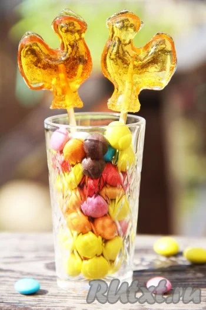
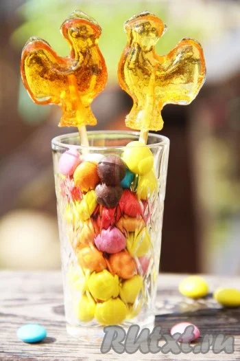

Караме́льная трость (англ. candy cane) — твёрдая карамельная палочка в форме трости. Традиционно белая с красными полосами со вкусом перечной мяты или корицы (поэтому её также называют «мятная палочка» или «палочка с корицей»), тем не менее, её также делают со множеством других вкусов и могут украшать полосами других цветов и толщины. Карамельная трость — традиционная конфета на рождественских праздниках, особенно в Западном мире.
Наиболее традиционная версия происхождения карамельной трости датирует его второй половиной XVII века. Согласно этой версии, хормейстер Кёльнского собора, решая задачу, как заставить молчать мальчиков-певчих в ходе службы, и отчаявшись добиться тишины наказаниями, заказал у местного кондитера длинные леденцовые палочки. По его расчёту, такая сладость должна была надолго занять детей. В то же время, чтобы избежать обвинений в греховности такого удовольствия, хормейстер «замаскировал» сладость под учебное пособие: по его просьбе кондитер изогнул палочки, придав им форму пастушеского посоха, чтобы они напоминали детям о поклонении пастухов младенцу Иисусу.
Ещё одна версия, рассматривающая карамельную трость как разновидность раннего ёлочного украшения, объясняет крюк на трости как способ подвешивать её на ёлку. Известна также легенда, связывающая появление полосатых карамельных тростей с эпохой Английской революции, когда пуританские власти запретили рождественские празднества. Согласно легенде, белые карамельные трости с четырьмя красными полосами (тремя тонкими, символизирующими Троицу, и одной широкой, в память об искупительной силе крови Христа) стали опознавательным знаком среди противников режима.
По всей видимости, однако, первоначально карамельные трости были чисто белыми — обычный цвет сахарных палочек. Именно такой цвет имеют карамельные трости на рождественских открытках почти до конца XIX века. Тем не менее к середине XIX века полосатые карамельные трости, наиболее распространённые в настоящее время, уже были известны — рецепт приготовления полосатой мятной карамельной трости был в частности включён в поваренную книгу 1844 года «The Complete Confectioner, Pastry-cook, and Baker». О полосатой мятной трости и паре шерстяных рукавиц мечтает героиня автобиографической книги Лоры Инглз-Уайлдер «Маленький домик в Больших Лесах», действие которой происходит в 1860-е годы.
В США распространена легенда о том, что карамельную трость изобрёл производитель сладостей из Индианы, при её дизайне использовавший целый ряд христианских символов. Так, белизна сахарной палочки якобы символизировала чистоту непорочного зачатия Иисуса Христа, её твёрдость — краеугольный камень в основании христианской церкви, красные полосы — пролитую Искупителем кровь, а форма — букву J, первую в латинском написании имени «Иисус» (англ. Jesus). В действительности первое задокументированное появление карамельных тростей в США связывает их с именем иммигранта из Германии Августа Имгарда, в 1847 году нарядившего в штате Огайо рождественскую ёлку бумажными гирляндами, печеньем, позолоченными орехами и рождественскими тростями.
Соединённые Штаты в 1950-е годы стали местом, где был освоен промышленный автоматизированный выпуск карамельных тростей. Специальная машина, изгибающая сахарную палочку, была изобретена Грегори Келлером, чей родственник Боб Маккормак владел конфетной фабрикой в Олбани (Джорджия) и терял до 20 процентов продукции из-за того, что при традиционных способах изгибания конфеты ломались. Механизация процесса позволила довести количество выпускаемых в день тростей до семизначных чисел.
При производстве карамельных тростей сахарный сироп кипятится при температуре около 300 °F (150 °C), пока из него не будет выпарена почти вся вода. Полужидкая масса выливается на стол для охлаждения, где к ней добавляются вкусовые добавки (чаще всего мятная). Масса регулярно переворачивается, пока не достигает пластичной консистенции, необходимой для формовки. Полученное карамельное тесто пропускается через тянульную машину, где оно многократно складывается и вытягивается, приобретая традиционный мягкий блеск за счёт попадающих в него пузырьков воздуха. Часть теста отделяется и смешивается с пищевыми красителями, после чего прокатывается в тонкие полоски, затем накладываемые на более толстые полосы белого теста. Бело-красный цилиндр разрезается на отрезки одного размера, которые затем скручиваются, образуя спиральный рисунок. После формирования крюка на конце готовые конфеты остужаются, становясь твёрдыми и хрупкими.
Для приготовления карамели нам понадобиться:
- Сахар - 6 ст. л.;
- Вода - 2 ст. л.;
- Уксус 9% - 1 ст. л.;
- Зубочистки или палочки;
- Масло сливочное или растительное для смазки формы.
Процесс приготовления:
- Для приготовления леденцов нам нужно подготовить форму и продукты.
- В небольшую кастрюльку всыпать сахар, добавить воду и уксус. Всё перемешать.
- Поставить сахарную смесь на средний огонь. А сейчас самое главное: в процессе готовки карамель НЕЛЬЗЯ ПОМЕШИВАТЬ (!!!), иначе она "засахарится" и будет похожа на просто очень мокрый сахар, а потом этот сахар застынет в пуленепробиваемый камень. Да и леденцы получатся шершавыми и комковатыми, а ведь нам нужно добиться гладкой и прозрачной консистенции конфет. Итак, наберёмся терпения и не будем трогать карамель.
- Сахарная смесь начнёт потихоньку закипать и сахар начнёт растворяться. Смесь станет прозрачной. Перемешивать карамель не надо!
- Форму для леденцов смазать растительным или сливочным маслом
- А теперь смотрим и выбираем цвет наших леденцом, если хотите леденцы насыщенного цвета, просто готовьте карамель на огне чуть дольше, вы увидите, как она начнёт менять цвет от светлого до медного. Для приготовления светлых леденцов мне понадобилось 14 минут.
- Аккуратно разлить карамель по формочкам.
- Спустя 1 минуту вставить палочки.
- Оставить форму на 10-15 минут, а затем извлечь леденцы.
- Порадуйте близких замечательными конфетами, приготовленными в домашних условиях.
- Приятного аппетита и ярких Вам моментов!
 
